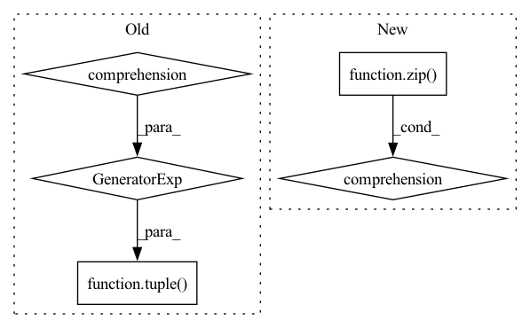

Pattern ID :18767

Before Change
def seq_mul(*tuples):
return tuple(functools.reduce(lambda x, y: x * y, tuples_) for tuples_ in zip(*tuples))
def seq_mul_bc(*tuples): // Supports broadcasting.
soln = ()
After Change
def seq_mul(*seqs):
return [functools.reduce(operator.mul, seq) for seq in zip(*seqs)]
def seq_mul_bc(*seqs): // Supports broadcasting.
In pattern: SUPERPATTERN
Frequency: 3
Non-data size: 5
Instances
Fragment ID: 61070135
Project Name: google-research/torchsde
Commit Name: bb4f95d2089b26315036813ba485d004b5699d65
Time: 2020-08-01
Author: 12689993+lxuechen@users.noreply.github.com
File Name: torchsde/core/misc.py
M Class Name: AnonimousClass
N Class Name: AnonimousClass
M Method Name: seq_mul(0)
N Method Name: seq_mul(0)
M Parent Class:
N Parent Class:
M File Name: torchsde/core/misc.py
N File Name: torchsde/core/misc.py
M Start Line: 72
M End Line: 72
N Start Line: 73
N End Line: 73
'>
Before Change
def seq_add(*tuples):
return tuple(functools.reduce(lambda x, y: x + y, tuples_) for tuples_ in zip(*tuples))
def seq_mul(*tuples):
return tuple(functools.reduce(lambda x, y: x * y, tuples_) for tuples_ in zip(*tuples))
After Change
def seq_add(*seqs):
return [sum(seq) for seq in zip(*seqs)]
def seq_mul(*seqs):
'>
Fragment ID: 61070134
Project Name: google-research/torchsde
Commit Name: bb4f95d2089b26315036813ba485d004b5699d65
Time: 2020-08-01
Author: 12689993+lxuechen@users.noreply.github.com
File Name: torchsde/core/misc.py
M Class Name: AnonimousClass
N Class Name: AnonimousClass
M Method Name: seq_add(0)
N Method Name: seq_add(0)
M Parent Class:
N Parent Class:
M File Name: torchsde/core/misc.py
N File Name: torchsde/core/misc.py
M Start Line: 68
M End Line: 68
N Start Line: 69
N End Line: 69
'>
Before Change
script_module = torch.jit.script(model)
else:
dummy_input = get_torch_tensor(dataloader)
script_module = torch.jit.trace(model, tuple(t.to(target_device) for t in sample_to_tuple(dummy_input)))
torch.jit.save(script_module, exported_model_path.as_posix())
After Change
else:
dummy_input = tuple(
torch.from_numpy(val.astype(spec.dtype)).to(target_device)
for (val, spec) in zip(profiling_sample.values(), input_metadata.values())
)
script_module = torch.jit.trace(model, dummy_input)
torch.jit.save(script_module, exported_model_path.as_posix())
'>
Fragment ID: 61070133
Project Name: triton-inference-server/model_navigator
Commit Name: 1fb19ee11e4de51157ee2d846fe1a8ee633202e9
Time: 2022-02-24
Author: ptarasiewicz@nvidia.com
File Name: model_navigator/framework_api/commands/export/pyt.py
M Class Name: ExportPYT2TorchScript
N Class Name: ExportPYT2TorchScript
M Method Name: __call__(7)
N Method Name: __call__(6)
M Parent Class: Command
N Parent Class: Command
M File Name: model_navigator/framework_api/commands/export/pyt.py
N File Name: model_navigator/framework_api/commands/export/pyt.py
M Start Line: 57
M End Line: 58
N Start Line: 50
N End Line: 67